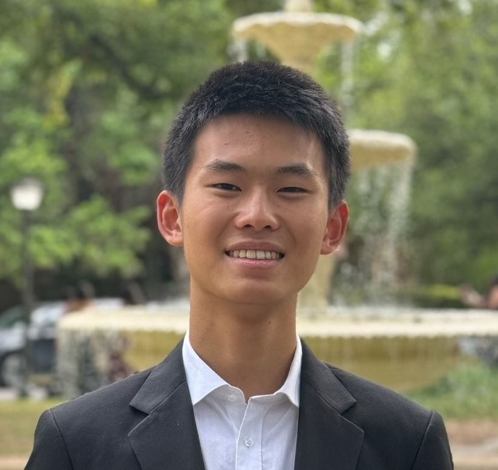

|
Kevin Wang
I explore emergent intelligence — how beings can form reasoning and culture more than the sum of their parts in biology, deep learning, and anthropology. This encourages better human interaction, the ways we design intelligent systems to empower humanity; and stories, the medium through which we convey novel lenses of viewing the world.
I study computer science at MIT and research applied interpretability at Tilde Research. Before that, I worked on a range of projects spanning education, ML performance and interpretability, distributed systems, and replicable community design. I also enjoy writing, stargazing, photography, teaching, and exploring Chinese supermarkets. It's lovely to meet you; please reach out at kevinhw [at] mit [dot] edu.
Email /
Github /
LinkedIn /
Goodreads /
Substack
|

|
Projects
These days, my focus is on leading research for novel synthetic data generation methods for efficient pre-training. I also study astrophysics, and read and write about economics, history, and fiction, which I will update here soon. Here are a few things I've enjoyed working on in a current or past life.
|
F=math
Founded math competition non-profit; led 12 volunteers and impacted over 300 students, donating over $5000. Organized 5-day in-person summer camp, wrote 100+ hours of curriculum, organized a 70-problem math tournament, managed 10 classes and a 200+-member Discord, leveraged social media and partnered with 5+ organizations.
|
Mechanistic Interpretability Research
Uncovered complete circuit for spatial reasoning in vision-language transformers through activation patching as an undergraduate student researcher in the Torralba Lab. Designed novel, automated tools and visualizers for cost-efficient mechanistic interpretability used by researchers.
|
HybridMerge
Designed novel KV cache compression combining local merges based on cosine similarity with Sinkhorn–Knopp under an optimal transport framing, beating SOTA on long-context benchmarks under extreme compression ratios. Reduced computational complexity by up to 20× and proved the first output error bounds for merge-based KV caches.
|
2D Material-Based Transistors
Developed a gold-mediated exfoliation process to transfer MoS₂ monolayers onto Si/SiO₂ substrates. Used precision lithography to pattern transistors with 100 µm gate lengths and 10 µm channel widths, overcoming sub-10 µm alignment tolerances, and manufactured multiple prototypes with reliable gating behavior and IV curves.
|
Fault-Tolerant Distributed Key-Value Store
Designed and engineered a highly-available, sharded key/value service from scratch with many shard groups for scalability and a fault-tolerant controller for reconfiguration. Ensured improved throughput from Raft and 100% linearizability during crashes, partitions, and dropped RPCs.
|
blog.api
Developed a dashboard and frontend blog UI supporting post creation with links and images using Contentful. Created REST APIs for managing posts, comments, and images in real time, with live tracking of views, search features, and email subscriptions; garnered more than 20,000 views.
|
TuneTutors
Designed rhythm games and a song mnemonic generator using Suno to assist students with learning disabilities. Built a game client that matched an educational song with adaptive, interactive lyrics using React.js, plus an authentication pipeline and ML framework to generate unique games for individual users.
|
|
Spring 2025
|
6.7800 Inference and Information
6.5840 Distributed Systems
6.1903 Introduction to Low-level Programming in C and Assembly
6.1910 Computation Structures
|
|
Fall 2024
|
18.435 Quantum Computation
18.404 Theory of Computation
6.1220 Design and Analysis of Algorithms
6.2540 Nanotechnology
|
|